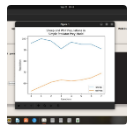
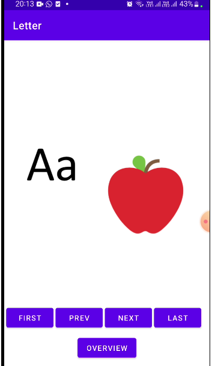
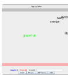
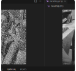

I am a deciplined and ambitious graduate with a Bsc in Computer Science and Business Computing from the University of Cape Town. Proficient in java , python, sql, flask web development, TypeScript,Skilled in network programming, data structures, algorithm design, and concurrency programming. I am pationate about software development , blockchain and learning new technologies. I have strong communication and problem solving skills, I am an Active member of the Developers Society at the university of cape Town.
- Java and Python (OOP)
- MongoDB
- Flask web development
- HTML
- CSS
- JavaScript
- Basic Android app development with Kotlin
- Scrum
- SQL and NoSQL databases
- Computer networks (TCP/IP)
- Parallel programming
- Data structures and algorithms
- TypeScript
Important links and documents
PROJECTS

Created a Flask-based website featuring a user-friendly Graphical Editor for Agent-Based Model
(ABM) development using ECAgent. Implemented non-specialist-oriented interfaces for easy
agent, component, and system creation. Enabled user-configurable input parameters and the
download of complete models as a single Python file for CPython execution. Demonstrated efficacy
by designing and executing a simple ABM within the editor, showcasing a commitment to intuitive
design and technical proficiency.

Created an Alphabet learning app for children. I developed the App using Kotin and android studio, used figma for prototyping, followed SDLC and used git for version control. I learned a lot about design from this project from interview techniques to agile and group work.

I developed a typing game in which words descend and vanish upon correct typing, and if they reach the bottom, you fail to catch them.This deepened my understanding of thread synchronization and safety. I learned to synchronize access to shared resources using locks, synchronization blocks , countdown latched and atomic variables. Additionally, I refined my java GUI development skills by creating an engaging user interface. Overall, this project strengthen my knowledge of concurrent programming, thread management and GUI design.

I created an image Filter program that removes noise from an image. I learned how to utilize parallel programming techniques in java using the Fork/join framework. This project improved my java programming skills and enhanced my understanding of parallel programming , concurrency programming and image manipulation.